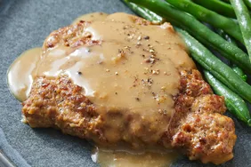

Steak Recipe

Description
The best Steak on the Planet. Made by Dad.
- 1 cup all-purpose flour.
- 1 teaspoon cracked black pepper.
- 1 teaspoon seasoned salt.
- ¼ teaspoon garlic powder (Optional).
- 1 pound beef cube steaks.
- ½ cup olive oil.
- 2 cups beef broth.
- Gather all ingredients and preheat the oven to 350 degrees F (175 degrees C).
- Mix flour, black pepper, seasoned salt, and garlic powder together in a shallow bowl. Coat cube steaks thoroughly with flour mixture, patting flour onto steaks to get a good coating.
- Retain 3 tablespoons of seasoned flour.
- Heat olive oil in a skillet over medium heat. Pan-fry cube steaks until golden brown on both sides, about 5 minutes per side. Place steaks into a 9x12-inch baking dish.
- Whisk retained seasoned flour into beef broth until smooth.
- Pour broth over steaks. Cover the dish with aluminum foil.
- Bake in the preheated oven until the meat is tender and the gravy has thickened, about 2 hours.